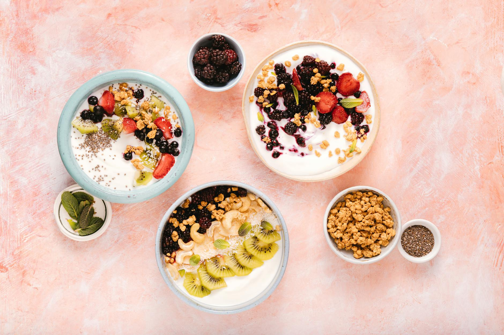

Can Fermented Foods Improve Digestion? Plus Fiber & Meal Timing Tips
Key takeaways
- Many of us experience occasional digestive discomfort – think bloating, gas, or that sluggish feeling.
- While it's easy to dismiss these as just part of life, they can often be signals from your gut microbiome, the complex ecosystem of bacteria and other microb
- Focus on: Feeling Bloated? Your Gut Might Be Trying to Tell You Something..

Feeling Bloated? Your Gut Might Be Trying to Tell You Something.
Many of us experience occasional digestive discomfort – think bloating, gas, or that sluggish feeling. While it's easy to dismiss these as just part of life, they can often be signals from your gut microbiome, the complex ecosystem of bacteria and other microbes living in your digestive tract. A healthy gut is crucial for more than just digestion; it plays a role in immunity, mood, and even how your body absorbs nutrients. Fortunately, you have the power to nurture your gut health through simple, everyday choices. This article dives into three key areas: the power of fiber, the benefits of fermented foods, and the surprising impact of when you eat.
Educational only — not medical advice.
The Foundation: Why Fiber is Your Gut's Best Friend
Fiber is a type of carbohydrate that your body can't digest. Instead, it travels through your digestive system relatively intact, acting as a prebiotic – food for the beneficial bacteria in your gut. These good bacteria ferment the fiber, producing short-chain fatty acids (SCFAs) like butyrate, which are vital for gut lining health and have anti-inflammatory properties. Think of fiber as the essential fuel that keeps your gut microbiome happy and thriving.
Types of Fiber and Where to Find Them
There are two main types of fiber: soluble and insoluble.
- Soluble fiber: Dissolves in water, forming a gel-like substance. It can help lower cholesterol and blood sugar levels. Good sources include oats, beans, apples, citrus fruits, carrots, and barley.
- Insoluble fiber: Doesn't dissolve in water and adds bulk to your stool, helping food pass more quickly through your stomach and intestines. You can find it in whole-wheat flour, wheat bran, nuts, beans, and cauliflower.
Aim for a variety of both to get the full spectrum of benefits. For example, starting your day with oatmeal topped with berries and nuts is a fantastic way to incorporate both types.
The Power of Fermented Foods: Probiotics in Action
Fermented foods are produced through a process where microorganisms like bacteria and yeast break down food components, such as sugars and starches, into other compounds. This process not only preserves food but also creates beneficial probiotics – live microorganisms that can confer health benefits when consumed in adequate amounts. These probiotics can help replenish and diversify your gut's microbial population.
Examples of Gut-Friendly Fermented Foods
- Yogurt: Look for varieties with "live and active cultures." Plain, unsweetened yogurt is best to avoid added sugars.
- Kefir: A fermented milk drink that's often more potent in probiotics than yogurt.
- Sauerkraut: Fermented cabbage. Opt for unpasteurized versions found in the refrigerated section for live cultures.
- Kimchi: A spicy Korean fermented cabbage dish.
- Kombucha: A fermented tea drink. Be mindful of sugar content, as some brands can be quite sweet.
- Miso: A fermented soybean paste used in Japanese cuisine.
Incorporating a small serving of fermented foods daily can make a difference. For instance, adding a spoonful of sauerkraut to your sandwich or enjoying a glass of kefir with your breakfast can be simple ways to start.
Meal Timing: When You Eat Matters Too
Beyond what you eat, when you eat can also influence your digestive health. Our bodies have natural circadian rhythms that affect digestion, hormone release, and metabolism. Eating large meals late at night, for example, can disrupt these rhythms and lead to digestive discomfort and poorer nutrient absorption.
Practical Meal Timing Strategies
- Eat your largest meal earlier in the day: This allows your body more time to digest and process food before bedtime.
- Avoid eating close to bedtime: Aim to finish your last meal or snack at least 2-3 hours before you plan to sleep. This gives your digestive system a break overnight.
- Consider mindful eating: Slow down, savor your food, and pay attention to your body's hunger and fullness cues. This can improve digestion and prevent overeating.
For example, if you typically have a heavy dinner at 9 PM, try shifting it to 7 PM and see how you feel. A consistent eating schedule can help regulate your digestive system.
Actionable Checklist for Better Gut Health
Ready to take control of your digestive wellness? Use this simple checklist:
- [ ] Increase daily fiber intake with fruits, vegetables, and whole grains.
- [ ] Incorporate at least one serving of fermented food daily (e.g., yogurt, kefir, sauerkraut).
- [ ] Establish a consistent eating schedule, finishing meals 2-3 hours before bed.
- [ ] Practice mindful eating: chew thoroughly and eat slowly.
- [ ] Stay hydrated by drinking plenty of water throughout the day.
Common Mistakes to Avoid
While focusing on fiber, fermented foods, and meal timing is beneficial, there are a few common pitfalls:
- Suddenly increasing fiber intake: This can lead to gas and bloating. Introduce fiber gradually to allow your gut to adjust.
- Overdoing fermented foods: Start with small amounts. Too much too soon can sometimes cause temporary digestive upset.
- Ignoring individual responses: Everyone's gut is unique. Pay attention to how your body reacts to different foods and timing. What works for one person might not work for another.
- Relying solely on supplements: While helpful, supplements shouldn't replace a balanced diet rich in whole foods. Focus on getting nutrients from your meals first.
Putting It All Together
Improving your gut health is a journey, not a race. By focusing on increasing your fiber intake, enjoying the benefits of fermented foods, and being mindful of your meal timing, you can make significant strides toward better digestion and overall well-being. Remember to listen to your body and make gradual changes. Your gut will thank you!
For more tips on healthy living, check out our guide to mindful eating, recipes for gut-friendly meals, understanding prebiotics, the link between sleep and digestion, and stress management techniques.
Disclosure: This page may contain affiliate links. If you click through and make a purchase, we may earn a commission at no additional cost to you. We recommend products we believe in, like a White Noise Machine, which can contribute to better sleep and overall health.
Frequently Asked Questions (FAQ)
What is the best fermented food for gut health?
There isn't one single "best" food, as variety is key. However, yogurt with live cultures, kefir, and unpasteurized sauerkraut are excellent starting points due to their high probiotic content.
How much fiber do I need daily?
Most adults need 25-35 grams of fiber per day. Gradually increase your intake to avoid digestive upset.
Can I eat fermented foods if I'm lactose intolerant?
Yes, many fermented foods like sauerkraut, kimchi, and kombucha are naturally lactose-free. Lactose-free yogurt and kefir are also available.
Is it okay to eat late at night if I have digestive issues?
It's generally recommended to avoid eating 2-3 hours before bed to allow your digestive system to rest and potentially reduce nighttime discomfort.
How long does it take to see improvements in gut health?
Consistency is key. You might start noticing subtle improvements within a few weeks, but significant changes can take several months of consistent healthy habits.
Related posts
Fiber vs. Fermented Foods: Which Boosts Gut Health?
Explore the roles of fiber and fermented foods in gut health. Learn practical tips to incorporate both for a happier, healthier gut.
Read more →
What's the Best Way to Wind Down Before Bed?
Discover effective bedtime routines and wind-down habits to improve your sleep quality. Learn practical tips for a more restful night.
Read more →
Calorie Counting vs. Awareness: Which Works Better for Sustainable Weight Loss?
Explore the differences between strict calorie counting and mindful calorie awareness for lasting weight loss. Discover practical tips for s
Read more →